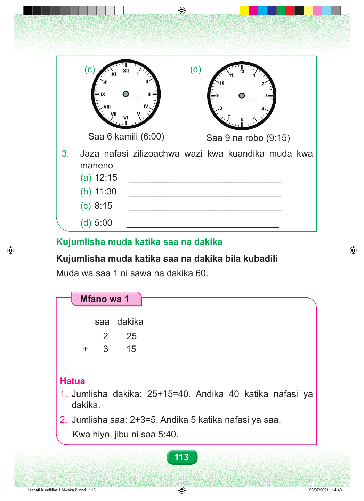

(c) (d) Saa 6 kamili (6:00) Saa 9 na robo (9:15) 3. Jaza nafasi zilizoachwa wazi kwa kuandika muda kwa maneno (a) 12:15 ______________________________ (b) 11:30 ______________________________ (c) 8:15 ______________________________ (d) 5:00 ______________________________ Kujumlisha muda katika saa na dakika Kujumlisha muda katika saa na dakika bila kubadili Muda wa saa 1 ni sawa na dakika 60. Mfano wa 1 saa dakika 2 25 + 3 15 Hatua 1. Jumlisha dakika: 25+15=40. Andika 40 katika nafasi ya dakika. 2. Jumlisha saa: 2+3=5. Andika 5 katika nafasi ya saa. Kwa hiyo, jibu ni saa 5:40. 113 Hisabati Kundirika 1 Mwaka 2.indd 113 23/07/2021 14:43